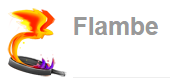
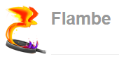
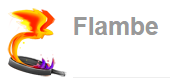

Pour les Jeux
-
 

Nicolas Cannasse
@ncannasse
BEST Meetup
<?php
if( $value > 58 )
haxe_Log::trace("Hello World !");
ou
# python
if (value > 58):
haxe_Log.trace("Hello World !")
-dce fullString, Array<T>, Map<K,V>, Date, Math, Bytes, Xml, JSON, Reflect, Type, EReg, Http, Unicode, Serialization, Crypto, Zip, Binary I/O...js.html: API HTML5 complète et typéesys: API système multi-plateformehttp://api.haxe.org
function print( str : String ) {
#if js
js.Browser.console.log(str);
#elseif sys
Sys.println(str);
#else
throw "Not supported for this platform";
#end
}
inline function print( str : String ) {
#if js
js.Browser.console.log(str);
#elseif sys
Sys.println(str);
#else
throw "Not supported for this platform";
#end
}
class, interface, typedef, structure, enum, abstract
function foo( k ) {
var str = "Hello World !";
var a = [];
for( i in 0...k )
for( word in str.split(" ") )
a.push(word);
return a;
}
function foo( k : Int ) : Array<String>
Dynamicvar x : Dynamic = ...; // fait ce que l'on veut avec x // responsabilité du développeur
Reflect pour du multi-plateforme
typedef AnyPoint = { x : Float, y : Float };
function distance( a : AnyPoint, b : AnyPoint ) {
var dx = a.x - b.x;
var dy = a.y - b.y;
return Math.sqrt(dx * dx + dy * dy);
}
distance( new Point(5,1), { x : 1.5, y : -1 });
for( e in iterable ) {...}
'The value of x is $x, and squared is ${x*x}'
var arr = [for( i in 0...10 ) i]; // [0,1,2,3,4,5,6,7,8,9]
var arr2 = [for( x in arr ) if( x % 3 == 0 ) x]; // [0,3,6,9]
enum Color {
Red;
Green;
Blue;
Gray( amount : Float );
Mix( a : Color, b : Color );
}
function getValue( c : Color ) {
return switch( color ) {
case Red: 0xFF0000;
case Green: 0x00FF00;
case Blue: 0x0000FF;
case Gray(v):
var g = Std.int(v*255);
v | (v<<8) | (v<<16);
case Mix(a,b):
mixColor(getColor(a), getColor(b));
};
}
class User {
public var age(get,set) : Int;
function get_age() { ... }
function set_age(v:Int) { ... }
}
macro function getBuildDate() {
var str = Date.now().toString();
return { expr : EConst(CString(str)), pos : ... };
}
lib.haxe.org
haxelib install <libname>
sys.db ORMjs.JQueryexterns

Nicolas Cannasse
@ncannasse
BEST Meetup